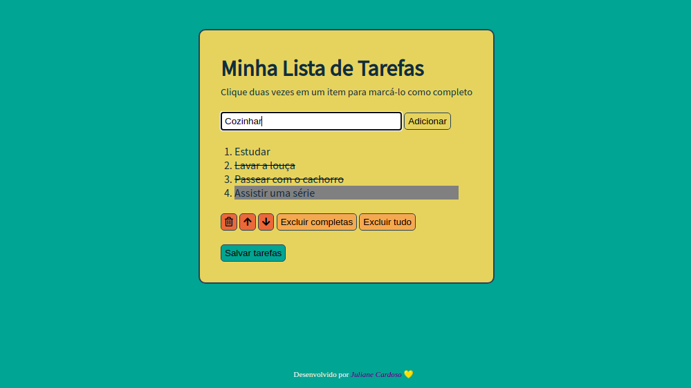
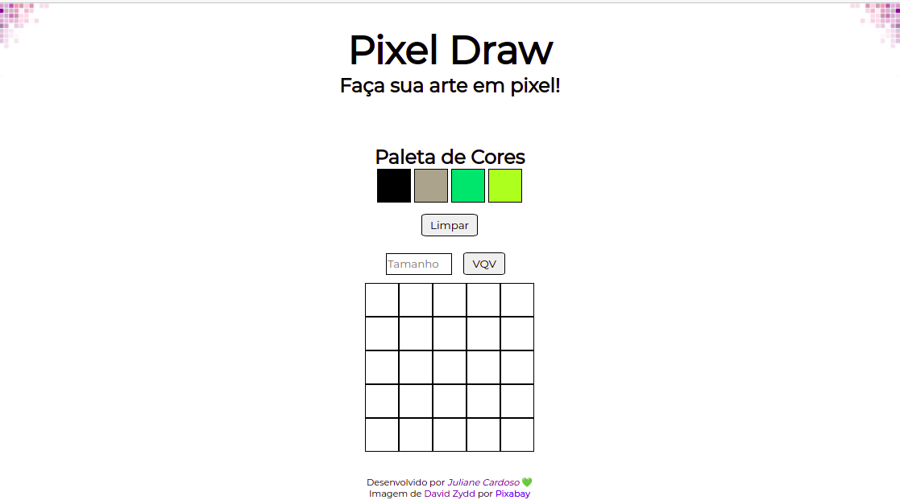
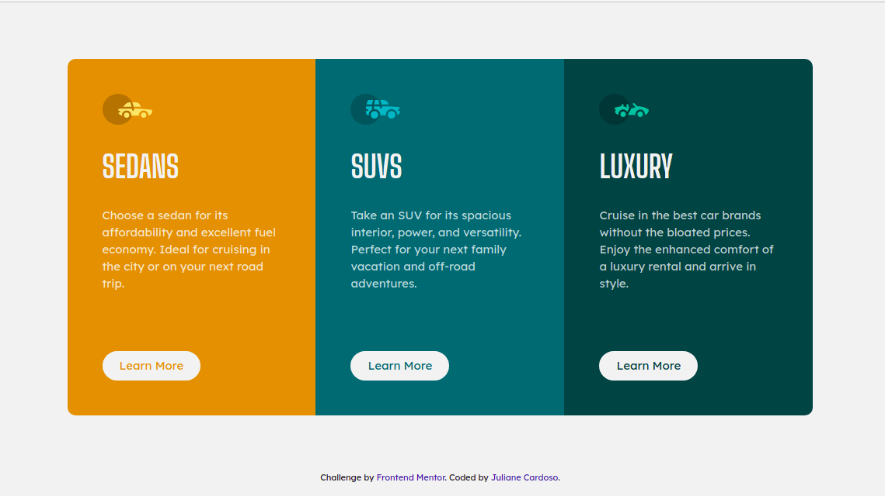

<!DOCTYPE html>
<html lang="en">

<head>
  <meta charset="UTF-8">
  <meta name="viewport" content="width=device-width, initial-scale=1.0">
  <title>Portfolio | Juliane Cardoso</title>
  <link rel="stylesheet" type="text/css" href="styles/style.css">
  <link rel="icon" href="images/web.png" type="image/x-icon">
  <script src="https://kit.fontawesome.com/fa866efc1f.js" crossorigin="anonymous"></script>
  
</head>
    
<body>
  <header>
    <nav class="top-nav">
      <i class="fa-solid fa-burger nav-icon"></i>
       <!-- <ul class="nav-container">
        <li><a href="#about-me">About me</a></li>
        <li><a href="#skills">Skills</a></li>
        <li><a href="#projects">Projects</a></li>
        <li><a href="#favorites">Favorites</a></li>
        <li><a href="#contact">Contact</a></li>
      </ul> -->
    </nav>
  </header>

    <!-- <main>
      <article id="about-me" class="about-me-container">
        <section class="intro">
          <h1>Hello! &#9996;</h1>
          <h2>Welcome to my portfolio.</h2>
          <h2>My name is <span class="name">Juliane Cardoso</span>.</h2>
        </section>
                
        <section class="info">
           
                    
          <h3>About me</h3>
          <p>
            I'm currently a Software Engineering Bachelor's student based in Brazil.
            Although I started with Portuguese Language and Literature in my undergrad
            journey, my passion for technology led me to switch paths. 🚀 I thrive on
            learning new things and take pride in being both autistic and openly bisexual.
            When I'm not coding, you can find me indulging in my love for knitting and
            crochet. Let's connect and explore the exciting world of software
            together! 🌐💻✨
          </p>

          <ul class="social-medias">
            <li>
              <a
                class="fab fa-linkedin-in"
                href="https://www.linkedin.com/in/juliane-cardoso-silva/"
                target="_blank">
              </a>
            </li>
            <li>
              <a
                class="fab fa-github"
                href="https://github.com/julianesilvac75"
                target="_blank">
              </a>
            </li>
          </ul>
        </section>
      </article>

      <article id="skills">
        <section class="hard-skills">
          <h3 class="section-title">Hard Skills</h3>
          <div>
            <span class="fab fa-html5 icons"></span>
            <P>HTML5</P>
          </div>
          <div>
            <span class="fab fa-css3-alt icons"></span>
            <p>CSS3</p>
          </div>
          <div>
            <span class="fab fa-js icons"></span>
            <p>JavaScript</p>
          </div>
          <div>
            <span class="fab fa-git-alt icons"></span>
            <p>Git Repositories</p>
          </div>
        </section>

        <section class="soft-skills">
          <h3 class="section-title">Soft Skills</h3>
            <ul>
              <li> <em>Cooperation</em></li>
              <li>Empathy</li>
              <li>Team working</li>
              <li><em>Resilience</em></li>
              <li>Curiosity</li>
              <li><em>Logical reasoning</em></li>
            </ul>
        </section>
      </article>
        
      <article id="projects">
        <h3 class="section-title">Projects</h3>
        <div class="projects-container">
          <div class="project-box">
            <div class="top">
              <div class="project-name">
                <h4>To Do List</h4>
                <ul>
                  <li>HTML</li>
                  <li>CSS</li>
                  <li>JavaScript</li>
                </ul>
              </div>
              <i class="fas fa-caret-down"></i>
            </div>

            <div class="content">
              
              <p>
                Dynamic to-do list where the user can include tasks,
                check them as done or delete them, as well as saving task lists 
                in the browser.
              </p>
              <div class="links">
                <a
                  href="https://julianesilvac75.github.io/projects/todo-list/"
                  target="_blank"
                >
                  Live page
                </a>
                <a
                  href="https://github.com/julianesilvac75/julianesilvac75.github.io/tree/main/projects/todo-list"
                  target="_blank"
                >
                  Repository
                </a>
              </div>
            </div>
          </div>

          <div class="project-box">
            <div class="top">
              <div class="project-name">
                <h4>Pixels Art</h4>
                <ul>
                  <li>HTML</li>
                  <li>CSS</li>
                  <li>JavaScript</li>
                </ul>
              </div>
              <i class="fas fa-caret-down"></i>
            </div>
            <div class="content">
              
              <p>
                Pixel game with random collors that allows the users choose the
                size of the board to create their own drawing.
              </p>
              <div class="links">
                <a
                  href="https://julianesilvac75.github.io/projects/pixels-art/"
                  target="_blank"
                >
                  Live page
                </a>
                <a
                  href="https://github.com/julianesilvac75/julianesilvac75.github.io/tree/main/projects/pixels-art"
                  target="_blank"
                >
                  Repository
                </a>
              </div>
            </div>
          </div>

          <div class="project-box">
            <div class="top">
              <div class="project-name">
                <h4>3 Column Preview Card Component</h4>
                <ul>
                  <li>HTML</li>
                  <li>CSS Bootstrap</li>
                </ul>
              </div>
              <i class="fas fa-caret-down"></i>
            </div>
            <div class="content">
              
              <p>
                Solution to a 3-column preview component challenge by
                <a
                href="https://www.frontendmentor.io/challenges/3column-preview-card-component-pH92eAR2-"
                target="_blank"
                >
                  <strong>Frontend Mentor</strong>
                </a>,
                where users can view the optimal layout depending on their device's screen
                size and also see hover states for interactive elements.
              </p>
              <div class="links">
                <a
                  href="https://3-column-preview-card-component-challenge-julianesilvac75.vercel.app/"
                  target="_blank"
                >
                  Live page
                </a>
                <a
                  href="https://github.com/julianesilvac75/3-column-preview-card-component-challenge"
                  target="_blank"
                >
                  Repository
                </a>
              </div>
            </div>
          </div>
        </div>
      </article>

      <article id="favorites">
        <h3 class="section-title">Favorites</h3>
        <div class="favorites-container">
          <div class="favorites-box">
            <div class="title">
              <a href="https://www.interfaces.news/">
                <i class="far fa-newspaper"></i>
                <h4>Interfaces</h4>
              </a>
            </div>
            <p class="description">
              Awesome newsletter about all the news from the world of technology.
            </p>
          </div>

          <div class="favorites-box">
            <div class="title">
              <a href="https://www.adorocinema.com/filmes/filme-226509/">
                <i class="fas fa-film"></i>
                <h4>Arrival</h4>
              </a>
            </div>
            <p class="description">
              Best movie ever about everything I love (technology, linguistics and aliens).
              This movie is based on a great short story by Ted Chiang named
              Story of Your Life.
            </p>
          </div>

          <div class="favorites-box">
            <div class="title">
              <a href="https://www.quatrocincoum.com.br/br/podcasts/451-mhz">
                <i class="fab fa-spotify"></i>
                <h4>451 MHz</h4>
              </a>
            </div>
            <p class="description">
              Amazing brazilian podcast about literature and culture.</p>
          </div>
        </div>
      </article>
    </main>        

    <footer>
      <div id="contact" class="footer-container">
        <div class="contact-container">
          <div>
            <h4>Contact me:</h4>
            <p>E-mail: julianesilvac75@gmail.com</p>
            <p>Phone: +55 (41) 99732-0920</p>
          </div>
          <div>
            <h4>Social media:</h4>
            <a href="https://github.com/julianesilvac75">
              <i class="fab fa-github-square"></i>
            </a>
            <a href="https://www.linkedin.com/in/juliane-cardoso-silva/">
              <i class="fab fa-linkedin"></i>
            </a>
            <a href="https://www.instagram.com/juli_cs/">
              <i class="fab fa-instagram-square"></i>
            </a>
          </div>
        </div>
        <div class="bottom-container">
          Coded by <em>Juliane Cardoso</em> &#128155; <a href="https://www.flaticon.com/free-icons/html" title="html icons">Html icons created by AmruID - Flaticon</a>
        </div>
      </div>
    </footer>

    <script src="script.js"></script>-->
</body>
</html> 